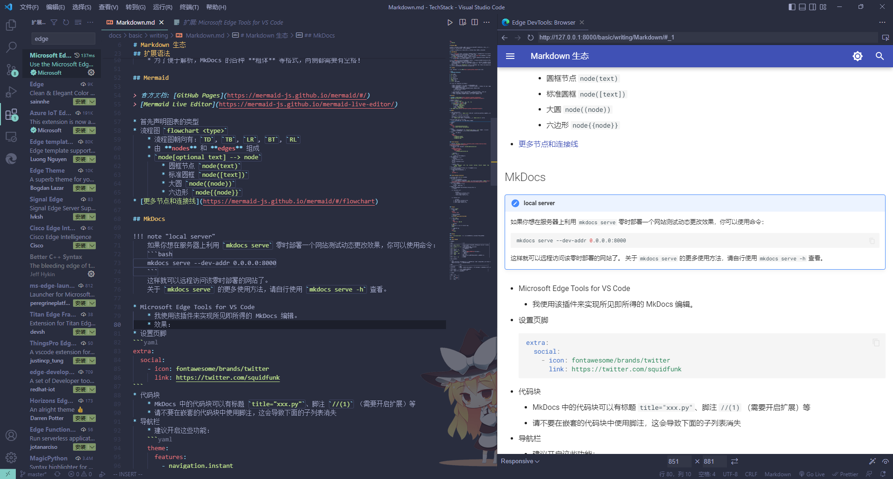

Markdown 生态¶
我喜欢使用 Markdown 做笔记，原因很简单，它非常通用。我接触过的笔记软件和 Blog 也都基于 Markdown，它们共同构建起了一个比较好的生态。
在本文档中，我将记录自己跨软件、跨平台使用 Markdown 遇到过的问题和解决方案。
我的笔记结构¶
- 我使用 Obsidian 管理所有 Markdown 笔记。这个笔记库在一个更大的同步库中，由 Syncthing 和 Onedrive 分别将该同步库同步至我的各个设备和云端备份。
- 我会将 Obsidian 的双向链接配置为 Markdown 格式的 相对链接，附件存储于当前文件夹下的
assest文件夹。这将为 MkDocs 和 Typora 提供便利
- 我会将 Obsidian 的双向链接配置为 Markdown 格式的 相对链接，附件存储于当前文件夹下的
- 我使用 Typora 作为主力编辑器。它可以胜任基于 GFM 的基础语法的 Markdown 编辑工作。
- 列表缩进设定为 4。
- 我使用 MkDocs 发布自己的笔记。
- 需要发布的笔记存放在 Obsidian 库的子文件夹中，是独立的 git 仓库。因为 Syncthing 的同步，我不需要在各个设备间重复 pull/push 操作，只需要在其中一台设备上完成，git 状态即可同步至其他设备。
- 我会使用 VSCode 扩展
Prettier来自动格式化文档。对于 MkDocs 中的 Admonition 等扩展语法，应当使用<!-- prettier-ignore -->将语法块包裹起来避免遭到破坏。
扩展语法¶
- 现行 Markdown 标注中以 GFM 最为通用。
From: 《了不起的 Markdown》
<u>下划线$内联公式~,^上下标==高亮<!-->注释$$数学公式块[TOC]目录[^ref]脚注:----:表格对齐符
For Compatible with MkDocs
- MkDocs只能识别 4 个空格或 1 个制表符的列表缩进。
- MkDocs 的代码块必须使用支持的语言标签才能正常工作。这些标签涵盖了几乎所有语言，因此只要设置正常，无需担心无法工作。
example
this is markdown
Mermaid¶
- 首先声明图表的类型
- 流程图
flowchart <type>- 流程图朝向有：
TD,TB,LR,BT,RL - 由 nodes 和 edges 组成
node[optional text] --> node- 圆框节点
node(text) - 标准圆框
node([text]) - 大圆
node((node)) - 六边形
node{{node}}
- 圆框节点
- 流程图朝向有：
MkDocs¶
配置和用法请参考官方文档，这里仅列出我使用的一些功能、文档里没有写明的技巧和注意事项。
中文粗体失效
感谢 @TonyCrane 学长帮助解决该问题！
在配置 Mkdocs Material 时，你可能遇到中文粗体失效的问题，只需要删去配置文件中的 betterem 即可。
问题的原因是 Markdown 语法解析规则。关于 Markdown 加粗语法解析的细节，可以查看这篇掘金的 文章。
local server
如果你想在服务器上利用 mkdocs serve 零时部署一个网站测试动态更改效果，你可以使用命令：
mkdocs serve --dev-addr 0.0.0.0:8000
关于 mkdocs serve 的更多使用方法，请自行使用 mkdocs serve -h 查看。
- Microsoft Edge Tools for VS Code
- 我使用该插件来实现所见即所得的 MkDocs 编辑。这需要开启
navigation.tracking来保证浏览器刷新后保持位置固定。 - 当文件越来越多时，建议添加
--dirtyreload选项，这样只会重新构建发生了更改的文件，让浏览器的刷新过程更快一些。 - 效果：
- 我使用该插件来实现所见即所得的 MkDocs 编辑。这需要开启
- 代码块
- MkDocs 中的代码块可以有标题
title="xxx.py"。
- MkDocs 中的代码块可以有标题
- 缩写 Abbreviations
- 可以创建一个全局的术语表，所有文档中的缩写都会得到应用。
- 警告 Admonition
- 支持这些 type：
noteabstractinfotipsuccesswarningfailuredangerbugexamplequote
- 支持这些 type：
- 清单 List
- 待办列表：语法符合 Markdown 通用标准，但需要启用扩展。
- 目录 Table of Contents
- 需要配置，目录深度默认为 6 太深了。
- toc: toc_depth: 3
- 需要配置，目录深度默认为 6 太深了。
- Arithmatex 数学公式块
$$语法支持 - Keys 按键标识
- 例：Ctrl+Alt+Del。
- 用
++将按键组合包裹起来即可。 - 对于逗号等按键，请使用别名，如
comma才能被正确解析。
!!! quote "Keys 插件的官方文档"
[文档](https://facelessuser.github.io/pymdown-extensions/extensions/keys/)
- SuperFences 超级栅栏 - 开启该扩展允许各类东西嵌套。
Note
Marmaid 也需要在这里开启。
- Tabbed 卡片 - 可以把内容组织成卡片，并且可以把卡片嵌套在警告中：
Example
* Sed sagittis eleifend rutrum
* Donec vitae suscipit est
* Nulla tempor lobortis orci
1. Sed sagittis eleifend rutrum
2. Donec vitae suscipit est
3. Nulla tempor lobortis orci
- 搜索插件
search- 不包括文件，可以在文件头输入：
search: exclude: true - 不包括部分或文段
## section {data-search-exclude}
- 不包括文件，可以在文件头输入：
- 标签插件
tags - MathJax：需要在
docs/javascripts中添加脚本，即可渲染内嵌 Latex。请参考官方文档。
编辑器¶
Typora 快捷键¶
都是很常用的快捷键，给我记住！
- 选择操作：Ctrl 加上以下按键
| keys | select range |
|---|---|
| D | word |
| L | line/sentence |
| E | format |
- 编辑操作
| keys | function |
|---|---|
Ctrl + B, I, K, U |
粗体、斜体、超链接、下划线 |
Alt + Shift + 5, I |
删除线、图片 |
Ctrl + <num>, =, -, 0 |
设置标题、提升、降低、普通文本 |
[, ], X |
有序、无序、任务列表 |
Ctrl + ], [ |
增加、减少缩进 |
Ctrl + Shift + Q |
引用 |
Ctrl + Shift + - + |
界面缩放 |
Ctrl + T, Enter |
表格（不如自己写表头方便）、新增行 |
| Ctrl+Shift+Backspace | 删除表格行 |
Alt + ↑↓←→ |
移动行列 |
Ctrl + \ |
清除样式 |
| Ctrl+Shift+M | 公式块 |
- 文件和窗口操作
Note
Typora 没有选项卡概念，因此它其实是多窗口操作。打开文件一定会新建窗口而不是替换当前打开的文件，Ctrl+Tab 也是在窗口之间切换。
| 组合 | 用途 |
|---|---|
| Ctrl+W | 关闭 |
| Ctrl+P | 快速打开文件 |
| Ctrl+Tab | 在已打开的文件中快速切换 |
| Ctrl+Shift+C | 复制 Markdown 源码 |
| Ctrl+Shift+V | 粘贴纯文本 |